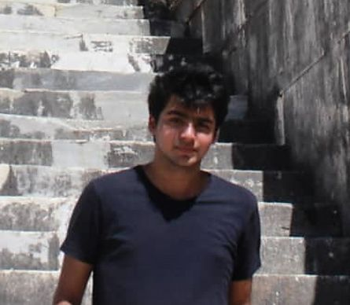

Ali Said Sarıtemur
Follow on:


- Bölüm:
- Sınıf:
- Telefon:
- Email:
- Konum:
Biyografi
6 Ağustos 2002'de İstanbul Fatih'te doğdum. İlkokula 7 yaşım'da Fatih İlköğretim Okulu'nda başladım. 2 yılık öğrenimimin ardından Nişanca İlköğretim Okulun'a geçiş yaptım. Yavuzselim Ortaokulun'da da ilk öğretim hayatımı tamamladım. Bu zaman diliminde başta satranç olmak üzere zeka oyunlarıyla haşır neşir oldum. Ve Bayrampaşadaki Sağmalcılar Anadolu Lisesi'ni kazandım. 4 yıllık lise hayatımda iyi arkadaşlık ilişkileri kurdum ve kişisel gelişimime önem gösterdim. Ve şu anda Sakarya Üniversitesinde Bilgisayar Mühendisliği Bölümü'nde öğrenim görmekteyim.
Hobilerim
- Film izlemek
- Bilgisayar oyunu oynamak
- Kod yazmak
- Kitap okumak
- Müzik dinlemek
Öğrenim gördüğüm kurumlar
- Fatih İlköğretim Okulu
- Nişanca İlköğretim Okulu
- Yavuzselim Ortaokulu
- Sağmalcılar Anadolu Lisesi
- Sakarya Üniversitesi